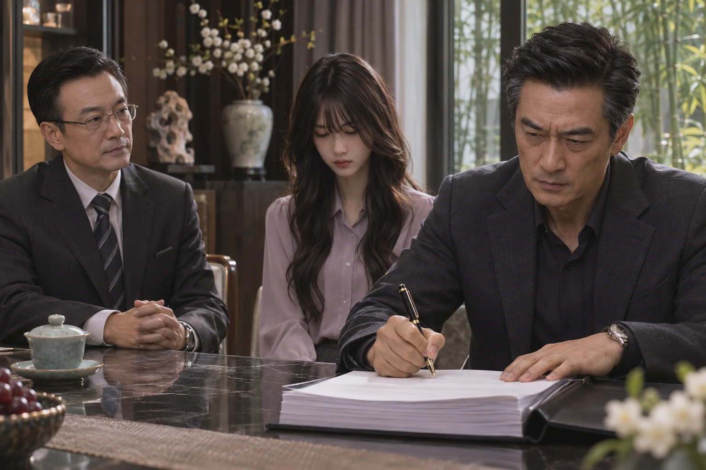
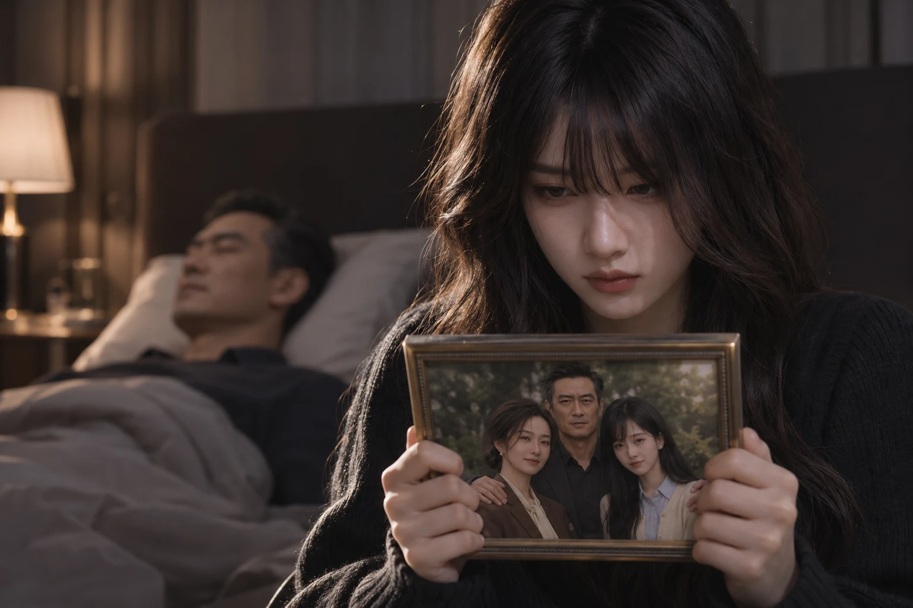

ตอนที่ 07
ไร้ทางเลือก
ซ่งเหวินอ่านข้อตกลงการหย่า และข้อตกลงการแบ่งทรัพย์สินปึกใหญ่จนตาลาย แต่เขาเคยชินกับการอ่านเอกสารอยู่แล้ว จึงสามารถจับประเด็นสำคัญได้อย่างรวดเร็ว
“ทำไมอาจิ่วถึงได้สินสมรสเจ็ดในสิบส่วน ฉันได้แค่สามส่วน ทั้งที่ความจริงควรแบ่งคนละครึ่ง”
“เพราะนายท่านใหญ่ทำผิดก่อน หากต้องฟ้องร้องจนขึ้นศาล นายท่านอาจต้องชดเชยมากกว่านี้นะครับ”
โดยปกติแล้ว หากจะบอกว่าคู่สมรสตนเองมีชู้ เป็นเหตุให้ฟ้องหย่า หลักฐานต้องแน่นหนาพอ ในกรณีของซ่งเหวินและโจวจิ่วก็เห็นชัดอยู่แล้ว มีพยานรักออกมาเป็นตัวเป็นตน ไม่ต้องพึ่งรูปถ่ายใด ๆ ทั้งสิ้น
“...” ซ่งเหวินพูดไม่ออก
“อ้อ นายท่านผู้เฒ่าเป็นคนสั่งให้ผมร่างข้อตกลงนี้ขึ้นมา หากไม่พอใจกับข้อตกลงนี้ นายท่านผู้เฒ่าบอกว่าปล่อยให้ศาลเป็นคนตัดสิน และทำตามกฎตระกูลทันที” ทนายวัยกลางคนแจกแจงอย่างเป็นการเป็นงาน ลึก ๆ ก็เชื่อว่ายังไงนายท่านใหญ่ต้องยอมรับข้อตกลงดังกล่าว เพราะอีกฝ่ายคงไม่ยอมเสี่ยงสูญเสียหุ้นและทรัพย์สินมูลค่ามหาศาลไปแน่ ๆ
ซ่งเหวินควันออกหู เขาไม่มีทางเลือกอื่นเลยนอกจากยอมเซ็นชื่อในข้อตกลงการหย่าร้างและการแบ่งทรัพย์สิน เขากำปากกาในมือจนแทบหัก ก่อนจรดปลายปากกาเซ็นชื่อลงในเอกสารอย่างไม่เต็มใจเท่าไหร่นัก

“ขอบคุณที่ให้ความร่วมมือนะครับ..” ทนายเก็บเอกสาร สายตาลอบสังเกตซ่งหว่านเล็กน้อย หญิงสาวก้มหน้าประสานมือไว้บนหน้าขา มองไม่เห็นว่าเธอรู้สึก หรือกำลังนึกคิดสิ่งใดอยู่ในใจ
ทว่าน่าแปลกนิดหน่อยที่เธอไม่มีส่วนใดคล้ายคลึงตระกูลซ่งเลย ขนาดนายน้อยเจียงซูและนายน้อยเจียงเซินยังมีบางส่วนคล้ายมารดาอยู่บ้าง
“เสร็จแล้วก็รีบกลับไปซะ” ซ่งเหวินออกปากไล่อย่างไม่สบอารมณ์ ไม่กี่ชั่วโมงที่ผ่านมา เขาสูญเสียไปมาก ทั้งสูญเสียภรรยารักอย่างฮวาผิง สูญเสียตำแหน่งว่าที่ผู้นำตระกูล ตำแหน่งประธานซ่งกรุ๊ป ต้องหย่ากับเมียแต่งอย่างไม่เต็มใจ ตอนนี้อารมณ์เขาไม่คงที่ และไม่อาจอดทนได้มากกว่านั้น
“ครับ รักษาสุขภาพด้วย” ทนายวัยกลางคนดึงสายตาตัวเองกลับมา ไม่ถือสาท่าทางไร้มารยาทของซ่งเหวิน เขาเก็บเอกสารทั้งหมดใส่กระเป๋า แล้วออกจากบ้านมาโดยไม่เหลียวหลัง
“คุณพ่อ.. ไปพักก่อนเถอะนะคะ หมอบอกว่าต้องนอนเยอะ ๆ แผลจะได้หายไว ๆ” ซ่งหว่านแตะแขนเขาเบา ๆ ไร้ซึ่งท่าทีร้อนรน เมื่อเห็นสถานะในตระกูลซ่งของอีกฝ่ายง่อนแง่น
สิ้นเสียงห่วงใยจากลูกสาว ซ่งเหวินที่กำลังหงุดหงิดก็อารมณ์เย็นลงทันที “ก็ดีเหมือนกัน พ่อเริ่มปวดแผลขึ้นมาแล้ว”
ชายวัยกลางคนนึกเปรียบเทียบลูกสาวคนโตและลูกสาวคนเล็กอยู่ในใจ ขณะที่ซ่งอวิ๋นไม่รู้จักสถานการณ์ ปล่อยให้การหย่าร้างระหว่างพ่อแม่เกิดขึ้นอย่างหน้าตาเฉย ซ่งหว่านกลับไม่เคยเรียกร้องอะไร เป็นเด็กดี เรียนเก่ง และรู้จักเอาอกเอาใจเขาตั้งแต่ยังเล็ก
แน่นอนว่าตอนแรกในใจเขามีความลำเอียงอยู่บ้าง ตอนนี้ยิ่งชัดเจนว่าเขาตัดสินใจถูกที่เอนเอียงเอ็นดูเสี่ยวหว่านมากกว่า
ซ่งหว่านประคองผู้เป็นพ่อขึ้นไปนอนบนห้อง ดูแลอยู่ข้างเตียงจนกระทั่งเขาเข้าสู่ห้วงนิทรา สายตาเหลือบเห็นรูปครอบครัวสุขสันต์บนตู้ข้างเตียง เธอคว้ามันมาถือ จากนั้นหญิงสาวก็เยื้องย่างออกไปยืนริมระเบียง สายลมฤดูร้อนวาบผ่านผิวหนัง บ่งบอกว่าเธอยังคงมีชีวิตอยู่
นัยน์ตาหงส์หลุบลงจับจ้องภาพถ่ายครอบครัวในมือ ไม่เปิดเผยอารมณ์ความรู้สึกภายใน ทว่าปลายนิ้วที่จับกรอบรูปเริ่มซีดขาวเพราะเธอออกแรงบีบมันจนมือสั่นระริก

ชาติก่อนเธอถูกรับเข้าบ้านซ่ง แต่สถานการณ์ไม่เหมือนกันเลยสักนิด เพราะพ่อไม่ได้พาเธอมาเปิดตัวในวันเกิดของซ่งอวิ๋น เส้นเรื่องจึงต่างจากชาตินี้โดยสิ้นเชิง ซึ่งชาติก่อนปู่ซ่งไม่ได้ไร้เมตตากับพ่อของเธอขนาดนี้ เธอได้เข้าบ้านซ่งก็จริง แต่อยู่เหมือนคนไร้ตัวตน
ทั้งที่เธอเป็นพี่ แต่ต้องอยู่ในฐานะคุณหนูรองที่ไม่มีใครสนใจ พ่อที่ปากบอกว่ารักเธอนักหนา สุดท้ายเมื่อถูกยื่นคำขาดจากโจวจิ่ว เพื่อไม่ให้ตัวเองหลุดจากตำแหน่ง ก็ไม่อาจใส่ใจเธอมากกว่าซ่งอวิ๋น สุดท้ายจุดจบของเธอคือ เสียชีวิตตั้งแต่ยังเรียนไม่จบ
แน่นอนว่าสิ่งที่ทำให้เธอประหลาดใจอีกประการหนึ่งก็คือความเด็ดขาดของโจวจิ่ว แม้ชาติก่อนจะโกรธและเสียใจแทบบ้า ล้มป่วยออด ๆ แอด ๆ แต่ไม่รู้ว่าถูกพ่อเกลี้ยกล่อมอย่างไร ถึงได้ไม่หย่าร้างในท้ายที่สุด
หรือเป็นเพราะสถานการณ์แตกต่าง การตัดสินใจของแต่ละคนจึงต่างกันออกไป รวมถึงความดุดันของปู่ซ่งด้วย
หากซ่งอวิ๋นล่วงรู้ถึงความคิดของซ่งหว่าน เธอคงมั่นใจได้ทันทีว่าเรื่องราวในนิยายที่เธอเห็นผ่านความฝัน คือเหตุการณ์ที่จะเกิดขึ้นในอนาคต ซึ่งอนาคตเปลี่ยนแปลงไปได้เสมอ ส่วนเรื่องในมุมมองของพี่สาวนอกสมรสคือเรื่องที่เคยเกิดขึ้นไปแล้วใช่ชาติก่อน
หรือก็คือ.. นางเอกนิยายเรื่องนี้กลับชาติมาเกิดเพื่อเอาคืนครอบครัว
“น่าขำ..” นัยน์ตาหงส์วาวโรจน์ขึ้นมาวูบหนึ่งและหายไปอย่างรวดเร็ว
รูปภาพครอบครัวอบอุ่นในมือเธอมีแต่การเสแสร้ง ตีสองหน้า ทรยศ หักหลัง ต่อให้ดูมีความสุขยังไง พอความจริงเปิดเผย ทุกอย่างย่อมแตกเป็นเสี่ยง ๆ
ตั้งแต่ได้โอกาสกลับมาเกิดแก้ไขชะตาตัวเอง เธอก็ตั้งใจไว้อยู่แล้วว่าจะทำให้ตระกูลซ่งล่มสลาย ดังนั้นเธอจึงไม่เดือดร้อนเมื่อซ่งเหวินถูกปลดจากตำแหน่ง เพราะเขาคือชายที่เธออยากให้ตกต่ำเป็นอันดับต้น ๆ ส่วนน้องสาวต่างแม่คนนั้นมีความสุขมาตลอด 18 ปี ควรทุกข์ใจบ้างก็ถูกแล้ว ยิ่งถ้าชีวิตเป๋ไปเหมือนชาติแรกเลยยิ่งดี
...
ซ่งอวิ๋นไม่รู้ว่าถูกนางเอกนิยายหมายหัว เช้านี้เธออ่านข่าวในโลกโซเชียลก็พบว่าซ่งกรุ๊ปประกาศปลดประธานซ่งเหวินลงจากตำแหน่ง แล้วให้ซ่งเซวียนนั่งตำแหน่งแทน
หลายคนไม่รู้สาเหตุก็วิพากษ์วิจารณ์ บ้างซุบซิบนินทา ส่วนคนที่ทราบสาเหตุเพราะอยู่ร่วมในงานเลี้ยงวันเกิดของซ่งอวิ๋นต่างพากันรูดซิปปาก ไม่แพร่งพรายสิ่งใดออกไป
จนกระทั่งนักข่าวสายธุรกิจสืบเสาะจนทราบถึงต้นตอปัญหา พวกเขาไม่รอช้า ปล่อยข่าวนี้ถึงหูผู้มั่งคั่งและนักธุรกิจทันที ซึ่งข่าวเน่าเหม็นมักกระจายไปได้เร็วกว่าเรื่องดี ๆ ดังนั้นใช้เวลาไม่กี่ชั่วโมง ทุกคนก็ทราบว่านายท่านใหญ่ซ่งทรยศการแต่งงาน แอบเลี้ยงดูรักแรกไว้นอกบ้านตลอด 20 กว่าปี ตอนนี้รักแรกเสียชีวิตแล้ว เหลือแค่ลูกสาวนอกสมรสเพียงคนเดียวเท่านั้น
“คุณหนู.. ตื่นหรือยังคะ” แม่นมฝางเคาะประตูห้องนอนด้วยสีหน้าไม่สู้ดีนัก
“ตื่นแล้วค่ะนม คุณแม่เป็นยังไงบ้างคะ” ซ่งอวิ๋นเปิดประตูต้อนรับแม่นมชรา
อันที่จริงเธอนอนไม่หลับแทบทั้งคืน เพราะเรื่องที่เกิดขึ้นยังส่งผลกระทบกับความรู้สึกไม่น้อย เช้ามาจึงรีบจัดการธุระส่วนตัว ตั้งใจว่าวันนี้จะลงไปที่ห้องนั่งเล่นเร็วเสียหน่อย
“นายหญิงอาการไม่ค่อยดีค่ะ เริ่มมีไข้ตั้งแต่เช้า ตอนนี้ทานยาแล้วก็เพิ่งหลับไป” แม่นมฝางบอกอย่างปวดใจ
“งั้นหนูไปหาคุณแม่ก่อนนะคะ” หญิงสาวไม่รอช้า จ้ำอ้าวตรงไปยังห้องนอนมารดาซึ่งอยู่ฝั่งตะวันตก ห่างจากห้องนอนเธอค่อนข้างมาก
ทันทีที่ประตูห้องนอนขนาดใหญ่เปิดกว้าง ซ่งอวิ๋นพลันพบว่าตอนนี้ผู้เป็นแม่นอนหลับสนิท ลมหายใจเข้าออกสม่ำเสมอ ทว่าใบหน้าที่เคยผุดผ่องอ่อนเยาว์กว่าอายุค่อนข้างซีดขาว
เมื่อคืนท่านพยายามเข้มแข็งมากแล้ว ถึงได้ยื่นคำขาดว่าต้องการหย่า แต่ต่อให้เข้มแข็งแค่ไหน เป็นไปไม่ได้ที่ท่านจะไม่เสียใจ ยิ่งรู้ว่าตัวเองถูกหลอกมาตลอด 20 ปี เป็นใครก็ต้องเสียศูนย์กันทั้งนั้น
“แม่คะ..” หญิงสาวนั่งลงข้างเตียง กุมมือมารดาไว้อย่างทะนุถนอม กรอบตาเธอร้อนผะผ่าว
“เสี่ยวอวิ๋น” โจวจิ่วปรือตามองซ่งอวิ๋น ตอนนี้เธอไม่มีเรี่ยวแรงจะลุกขึ้นนั่ง ได้แต่บีบมือลูกสาวเบา ๆ “ขอเวลาแม่สักหน่อยนะลูก เพียงไม่นาน แม่สัญญาว่าจะรีบเข้มแข็ง”
“ไม่เป็นไรเลยค่ะแม่ ตอนนี้แม่เสียใจ แค่ยอมรับมันว่าเสียใจ หนูก็เสียใจเหมือนกัน ไม่จำเป็นต้องรีบฝืนตัวเอง แม่เคยสอนหนูเองไม่ใช่เหรอคะว่าให้เวลาตัวเอง และให้เวลาเยียวยาความรู้สึก เดี๋ยวทุกอย่างก็จะค่อย ๆ ดีขึ้น”
“นั่นสินะ” โจวจิ่วยิ้มทั้งน้ำตา
“หนูขอแค่อย่างเดียว”
“พูดมาเถอะ ถ้าแม่ทำได้ จะไม่มีทางปฏิเสธคำขอของลูก”
“อย่าให้มันเลยเถิดถึงขั้นป่วยหนักเลยนะคะแม่ หนูไม่มีพ่อแล้ว ไม่มีแม่อีกไม่ได้นะคะ” ซ่งอวิ๋นเม้มปากแน่น
ในนิยายที่เธอเห็นผ่านความฝัน นางเอกเหมือนจะเกริ่นอยู่หน่อย ๆ ทำนองว่าแม่ของเธอตรอมใจต้องนอนติดเตียง เธอหวังว่าท่านจะไม่จมกับความเสียใจถึงขั้นนั้น
“อวิ๋นเอ๋อร์” โจวจิ่วรับรู้ถึงรสชาติขมปร่าไปทั่วลิ้น ใช่แล้ว หากเธอจมกับความเสียใจจนร่างกายทรุดโทรมยิ่งกว่านี้ แล้วลูกสาวเธอเล่า จะเป็นอย่างไรต่อไป
กล่าวตามตรง พ่อสามีอายุมากแล้ว หากเธอเป็นอะไรไป ท่านจะปกป้องเสี่ยวอวิ๋นได้อีกสักกี่ปีกันเล่า
“หนูต้องการแม่นะคะ.. ต้องการมากจริง ๆ” หญิงสาวปากคอสั่น
“ตกลง แม่รับปาก แม่จะรีบเข้มแข็ง สัญญาว่าวันสอบเกาเขา แม่จะเข้มแข็ง หายป่วยแล้วไปรอเชียร์ลูกถึงหน้าสนามสอบ” โจวจิ่วคิดได้ เมื่อคืนเธอนอนไม่หลับ และคิดวนเวียนไปมาอย่างทุกข์ตรม ตื่นเช้ามาร่างกายจึงทรุดโทรมและเป็นไข้
“ได้ยินแบบนี้หนูก็สบายใจแล้วค่ะ” ซ่งอวิ๋นยิ้มทั้งน้ำตา โน้มตัวลงไปกอดท่านไว้แน่น
“ไปกินข้าวเถอะลูก เริ่มสายแล้ว ปู่คงรอกินข้าวอยู่”